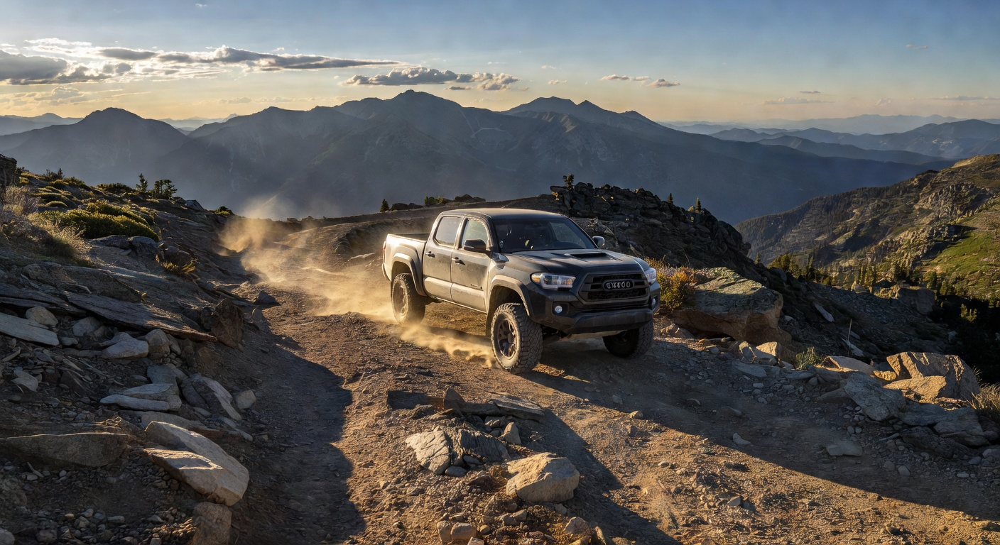

Covers by Vehicle
Click your vehicle for custom-fit recommendations and reviews
Jeep Wrangler JK/JL
★★★★★
The most popular platform for tactical covers. Bartact dominates here with custom-fit patterns for every JK and JL configuration.

Jeep Gladiator JT
★★★★★
Same premium quality, custom-fit for the Gladiator's unique dimensions. MOLLE-ready with full SRS compatibility.

Toyota Tacoma
★★★★★
Purpose-built for 2nd and 3rd gen Tacomas. The rugged fabric holds up to trail abuse while looking sharp on the commute.
Toyota 4Runner
★★★★☆
Full coverage options for 5th gen 4Runners. Great for overlanding rigs that need seats that can take a beating.
Ford Bronco
★★★★★
New platform, but Bartact already has full custom-fit coverage for 2-door and 4-door Broncos with MOLLE integration.